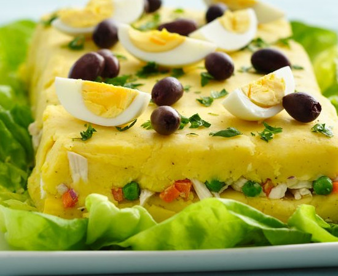

Causa Rellena a la Peruana

Description:
Causa rellena is a popular Peruvian appetizer found in local restaurants and on kitchen tables throughout the country. Served cold, it is a colorfully tiered dish of mashed potatoes, avocado, and chicken or tuna (or veggie-friendly alternatives). It's so easy to make that there's no reason not to give it a try!
-Ingredients-
- 5 pounds of Yukon Gold potatoes, chopped in half and cooked
- 1/4 cup of fresh lime juice
- 1 teaspoon salt
- 1/2 teaspoon ground black pepper
- 2 aji amarillo, cooked and mashed
- 2 cups cooked and shredded chicken
- 1/2 cup peas, cooked
- 2 medium carrots, peeled, finely chopped and slightly cooked
- 2 tablespoons purple onion finely chopped
- 2 tablespoons mayonaise
~Garnish~
- 1 tablespoon finely chopped parsley
- 1/2 cup kalamata olives, sliced
- 2 hard boiled eggs, peeled, chopped in quarters
- Lettuce leaves
Instructions:
- Cook potatoes and chill; Place potatoes in a ricer or mash until smooth; In a large bowl mix the cooked mashed potatoes, lime juice, salt, pepper, and chiles; In a medium bowl mix chicken, peas, carrots, onion and mayonaise
- Divide the previously prepared potato mix in two; Place half of the potato mixture on a large serving platter; form a rectangle about 7 by 11 inches; Pour chicken mixture over potato mixture on platter; Sprinkle salt and pepper to taste; Cover with the remaining prepared potato in a rectangle shape on top of last two layers
- Refrigerate for about 1 hour until ready to serve; Decorate the potato preparation with parsley, chopped eggs and olives; Arrange lettuce leaves around the potato preparation; Cut into squares